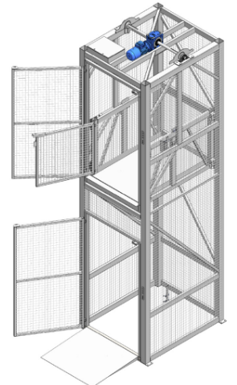

Goederenheffer

Goederenheffers worden gebruikt om goederen verticaal te transporteren tussen verdiepingen. De meeste goederenheffers zijn standalone systemen voor handmatige bediening. In Molenaarsgraaf zijn 2 goederenheffers automatisch en daarmee geschikt voor Montabots. Dit houdt in dat de bewegingen van de goederenheffers en de deuren vanuit de software aangestuurd wordt, waardoor de goederenheffers kunnen samenwerken met de Montabots.

Documentatie Goederenheffers Stapro
Stapro heeft bij de goederenheffers een map met Instructie en documentatie Goederenheffer geleverd. Deze is hier te vinden
********** De informatie hieronder is meer van technische aard **********

Technische informatie bij de Goederenheffer
Het systeem voor de Montabot Goederenheffer bestaat uit verschillende onderdelen.
Sigmatek PLC
De Goederenheffer wordt aangestuurd door een Sigmatek PLC. Deze is ontwikkeld door Eurotec. Deze stuurt opdrachten naar de PLC van de Goederenheffer.
MontabotHefferWindowsService
De MontabotHefferWindowsService draait op de mp-proc03 (Eindhoven) en mp-app06 (Rotterdam). De service maakt een TCP verbinding met de PLC. De service kan de status van de Goederenheffer uitlezen en kan de Goederenheffer een opdracht sturen. Dit zijn de volgende opdrachten: Naar een verdieping gaan, deur openen of deur sluiten.
Montabot service
De MontabotHefferWindowsService stuurt de status van de Goederenheffer door naar de Montabot service via RabbitMQ. De exchange heet 'Lift-Exchange'. De Montabot service kan de opdrachten verdelen over de Goederenheffers. Ook wordt door de Montabot service de rekken in de Goederenheffer gezet en vervolgens eruit gehaald op een andere verdieping.